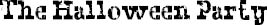

I WAS REALLY excited because I got an invitation to Savanna’s Halloween party.
Savanna is probably the most popular girl in the school. All the boys like her. All the girls want to be friends with her. She was the first girl in the grade to actually have a “boyfriend.” It was some kid who goes to MS 281, though she dumped him and started dating Henry Joplin, which makes sense because the two of them totally look like teenagers already.
Anyway, even though I’m not in the “popular” group, I somehow got invited, which is very cool. When I told Savanna I got her invitation and would be going to her party, she was really nice to me, though she made sure to tell me that she didn’t invite a lot of people, so I shouldn’t go around bragging to anyone that I got invited. Maya didn’t get invited, for instance. Savanna also made sure to tell me not to wear a costume. It’s good she told me because, of course, I would have worn a costume to a Halloween party—not the unicorn costume I made for the Halloween Parade, but the Goth girl getup that I’d worn to school. But even that was a no-no for Savanna’s party. The only negative about my going to Savanna’s party was that now I wouldn’t be able to go the parade and the unicorn costume would be wasted. That was kind of a bummer, but okay.
Anyway, the first thing that happened when I got to her party was that Savanna greeted me at the door and asked: “Where’s your boyfriend, Summer?”
I didn’t even know what she was talking about.
“I guess he doesn’t have to wear a mask at Halloween, right?” she added. And then I knew she was talking about August.
“He’s not my boyfriend,” I said.
“I know. I’m just kidding!” She kissed my cheek (all the girls in her group kissed each other’s cheeks now whenever they said hello), and threw my jacket on a coatrack in her hallway. Then she took me by the hand down the stairs to her basement, which is where the party was. I didn’t see her parents anywhere.
There were about fifteen kids there: all of them were popular kids from either Savanna’s group or Julian’s group. I guess they’ve all kind of merged into one big supergroup of popular kids, now that some of them have started dating each other.
I didn’t even know there were so many couples. I mean, I knew about Savanna and Henry, but Ximena and Miles? And Ellie and Amos? Ellie’s practically as flat as I am.
Anyway, about five minutes after I got there, Henry and Savanna were standing next to me, literally hovering over me.
“So, we want to know why you hang out with the Zombie Kid so much,” said Henry.
“He’s not a zombie,” I laughed, like they were making a joke. I was smiling but I didn’t feel like smiling.
“You know, Summer,” said Savanna, “you would be a lot more popular if you didn’t hang out with him so much. I’m going to be completely honest with you: Julian likes you. He wants to ask you out.”
“He does?”
“Do you think he’s cute?”
“Um … yeah, I guess. Yeah, he’s cute.”
“So you have to choose who you want to hang out with,” Savanna said. She was talking to me like a big sister would talk to a little sister. “Everyone likes you, Summer. Everyone thinks you’re really nice and that you’re really, really pretty. You could totally be part of our group if you wanted to, and believe me, there are a lot of girls in our grade who would love that.”
“I know.” I nodded. “Thank you.”
“You’re welcome,” she answered. “You want me to tell Julian to come and talk to you?”
I looked over to where she was pointing and could see Julian looking over at us.
“Um, I actually need to go to the bathroom. Where is that?”
I went to where she pointed, sat down on the side of the bathtub, and called Mom and asked her to pick me up.
“Is everything okay?” said Mom.
“Yeah, I just don’t want to stay,” I said.
Mom didn’t ask any more questions and said she’d be there in ten minutes.
“Don’t ring the bell,” I told her. “Just call me when you’re outside.”
I hung out in the bathroom until Mom called, and then I snuck upstairs without anyone seeing me, got my jacket, and went outside.
It was only nine-thirty. The Halloween Parade was in full swing down Amesfort Avenue. Huge crowds everywhere. Everyone was in costume. Skeletons. Pirates. Princesses. Vampires. Superheroes.
But not one unicorn.